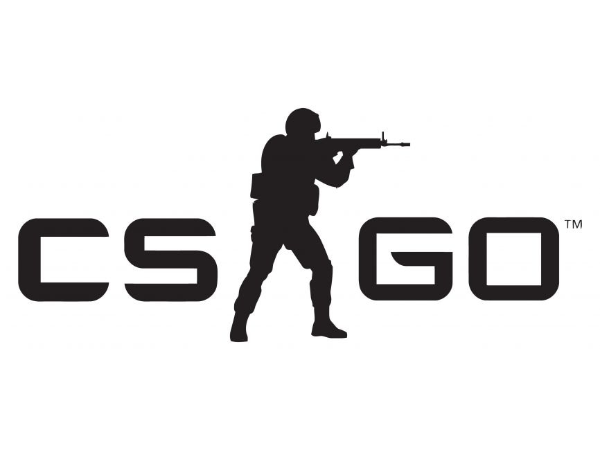

Welcome to the CS:GO Presentation

Counter-Strike: Global Offensive (CS:GO) is a
first-person shooter video game developed by Valve Corporation and Hidden
Path Entertainment.
It is the fourth game in the
Counter-Strike series, which began with the original
Counter-Strike mod for Half-Life, back in
1999.
How is CS:GO played?
- Two teams: Terrorists and Counter-Terrorists
-
Various game modes:
- Classic: Bomb Defusal and Hostage Rescue
- Arms Race
- Demolition
- Deathmatch
-
Most popular maps:
- Dust II
- Mirage
- Inferno
- Cache
- Overpass
- Train
-
Competitive esports scene:
- Professional organizations and teams
- Various leagues and online qualifiers
- Various regional and international tournaments
- Esports awards and recognition
- Major Championships (Majors) organized by Valve